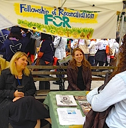

Dear Friends,
As we reported last week, FOR-USA joined with activists from all over the world for a weekend mobilization to demand a nuclear-free, peaceful, just, and sustainable world. Organized by AFSC and an international planning group, we were honored to contribute to the Peace and Planet conference and festivities.
Our Executive Director Rev. Kristin Stoneking co-led a packed workshop, alongside Pax Christi International and the World Council of Churches, on Nuclear Disarmament: Solidarity and a Global Ethic of Abolition. Kristin also provided the homily for a standing-room-only Interfaith Convocation at the Church Center at the United Nations.
Organized by former FOR Executive Director Mark Johnson, other FOR participants in the interfaith service included Sahar Alsahlani, National Council member, and Rev. Osagyefo Sekou, Freeman Fellow, who contributed sacred readings and lead the congregation in song.
After a rally and march through midtown Manhattan, FOR staff, Director of Communications Linda Kelly and I, tabled at the festival in Dag Hammarskjold Plaza along with Kristin and National Council Vice Chair Isaac Beachy. We met many FOR supporters and friends. (See more photos on our Facebook page.)
And in the midst of the festivities and fervor for nuclear non-proliferation that had among their themes #ConnectingtheStruggles, we received word of an uprising in Baltimore in response to the April 19th death of Freddie Gray while in police custody. We heard the news media references to "riots" and recognized that long-term outrage, pain, and grief were manifesting in property damage and subsequent arrests, and our hearts began to race.
"A riot is the language of the unheard." ~ Rev. Martin Luther King, Jr.
Rev. Sekou, in between his talk at the Peace and Planet opening plenary on Friday evening and his rousing speech at the Sunday rally where more than 7,500 people gathered in Union Square, was in contact with folks on the ground in Baltimore. Clergy and community leaders have since reached out to us to support local leadership there with the same de-escalation and nonviolent resistance trainings that we've been organizing in St. Louis as well as Boston, Hartford, Cleveland, and elsewhere.
As training coordinator, I drove to Baltimore from our national headquarters in New York yesterday. Rev. Sekou is traveling to Baltimore from St. Louis today, and Ethan Vesely-Flad, our director of national organizing, will drive from Asheville, NC to arrive on Sunday.
In response to the uprising in Baltimore and the call for FOR to be present there, Rev. Kristin Stoneking said:
"It is clear that we are in the midst of a new movement not just for civil rights, but truly the right to life, liberty and the pursuit of happiness. The uprisings in Ferguson, Oakland, Baltimore, and other cities around the country are the visible manifestation of the toxin of racism and the impacts of structural violence being released.
"Some have questioned the role of nonviolence in the struggle over these last nine months (see "Nonviolence as Compliance" by Ta-Nehisi Coates). But nonviolence is not un-violence; it is not passive. It is a disciplined way of life for courageous people such as the protestors in Ferguson have shown themselves to be. It recognizes that means must be consistent with ends to achieve a truly just and ultimately reconciled outcome.
"The Fellowship of Reconciliation is committed to the transformation of unjust and oppressive realities through the methodologies and philosophies of nonviolence. The struggle in Ferguson, in Baltimore and around our nation continues as new young leaders on the ground persevere in leading us to become the country of free and brave people we were envisioned to be."
Here are ways that you can follow the nonviolent narrative as it evolves in Baltimore and support our efforts:
In service to nonviolent justice in Baltimore and beyond,
Gretchen Honnold
Training Coordinator
Fellowship of Reconciliation
Photos: Rev. Kristin Stoneking and Gretchen tabling at Peace and Planet Festival; Rev. Sekou speaks at Union Square rally, courtesy of photographer Arnie Alpert; Baltimore Uprising (Creative Commons). |